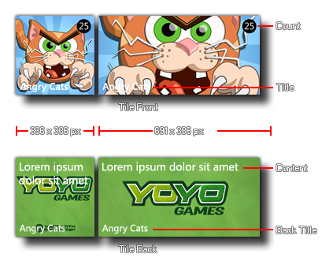
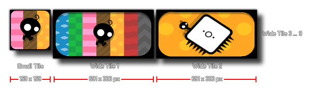

Windows 8 Phone
These functions are provided specifically for the Windows 8 Phone platform.
While the Windows 8 Phone OS looks very similar to the standard Windows 8 desktop version, the live tiles and other functions are a bit more limited. At the moment GameMaker:Studio permits you to use
special functions to modify the Live Tiles associated with your game. These functions are split into three groups (for the three different types of tiles that are available). Apart from the functions specific to the tile type,
there are also two that are available for all types:
- winphone_tile_title
- winphone_tile_count
NOTE : The tile type for your game (and it's initial values) can be set from the Global Game
Settings.
NOTE : As with other mobile target platforms, the Back Button on Windows Phone devices can be accesed using the
vk_backspace keyboard check.
Flip Tile

A Flip Tile is one that has a back and a front image and the tile switches (or "flips") between them over time.
The following functions are available to help you control their visual aspects:
- winphone_tile_front_image
- winphone_tile_front_image_small
- winphone_tile_front_image_wide
- winphone_tile_back_title
- winphone_tile_back_content
- winphone_tile_back_content_wide
- winphone_tile_back_image
- winphone_tile_back_image_wide
Iconic Tile
 The Iconic Tile is one that uses an "iconic" image in all formats. This image will occupy the whole tile for a small and medium tile, but will be reduced to a small icon over the chosen background
color for the wide tile (normally with some text associated with the tile two).
The Iconic Tile is one that uses an "iconic" image in all formats. This image will occupy the whole tile for a small and medium tile, but will be reduced to a small icon over the chosen background
color for the wide tile (normally with some text associated with the tile two).
The following functions can be used to set these properties:
- winphone_tile_background_color
- winphone_tile_icon_image
- winphone_tile_small_icon_image
- winphone_tile_wide_content
Cyclic Tile

The Cyclic Tile is one that uses a number of wide-tile format images and cycles between them. If the Live Tile is not a wide tile, then only a small image will be shown.
The following functions can be used to set these properties:
- winphone_tile_cycle_images
- winphone_tile_small_background_image
© Copyright YoYo Games Ltd. 2013 All Rights Reserved